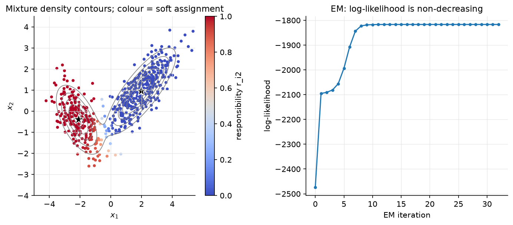

Probabilistic models & EM¶
Why this matters at staff level. Generative classifiers and EM are where an interviewer checks whether you can reason with Bayes' rule under a model. Fitting a discriminative loss is the easier skill and this part of the book already covered it. The EM derivation (Jensen → ELBO → E/M steps) is the same object as the VAE objective and the same alternating scheme as k-means, so being fluent here pays off in Parts IX and XII. Strong signal: derive Naive Bayes with Laplace smoothing, show that LDA's posterior is a logistic function, derive EM for a GMM with the monotonicity proof, and explain when you would reach for a mixture in a production uncertainty head or anomaly detector.
TL;DR: the interview card¶
- Generative: model \(p(x\mid y)p(y)\), classify by \(\argmax_k\log p(y=k) + \log p(x\mid y=k)\). Discriminative: model \(p(y\mid x)\) directly. Generative wins with little data / good model assumptions; discriminative wins asymptotically.
- Naive Bayes: \(p(x\mid y) = \prod_j p(x_j\mid y)\). Multinomial MLE \(\theta_{kj} = N_{kj}/N_k\); Laplace smoothing \(\boxed{\theta_{kj} = \frac{N_{kj}+\alpha}{N_k + \alpha d}}\) = MAP under a symmetric Dirichlet\((\alpha+1)\) prior. Works as a linear classifier in log-count space.
- GDA: \(x\mid y=k \sim \mathcal N(\mu_k, \Sigma_k)\). Shared \(\Sigma\) (LDA) → linear boundary; \(\boxed{p(y=1\mid x) = \sigma(w^Tx + b),\; w = \Sigma^{-1}(\mu_1 - \mu_0)}\). Per-class \(\Sigma_k\) (QDA) → quadratic boundary.
- GMM: \(p(x) = \sum_k\pi_k\mathcal N(x;\mu_k,\Sigma_k)\). E-step \(r_{ik} = \frac{\pi_k\mathcal N_k(x_i)}{\sum_j\pi_j\mathcal N_j(x_i)}\); M-step \(N_k = \sum_ir_{ik}\), \(\pi_k = N_k/N\), \(\mu_k = \frac1{N_k}\sum_ir_{ik}x_i\), \(\Sigma_k = \frac1{N_k}\sum_ir_{ik}(x_i-\mu_k)(x_i-\mu_k)^T\).
- EM: \(\log p(x\mid\theta) \ge \mathcal L(q,\theta) = \E_q[\log p(x,z\mid\theta)] + H(q)\) (Jensen). E-step: \(q = p(z\mid x,\theta)\) makes the bound tight. M-step: maximise \(\E_q[\log p(x,z\mid\theta)]\). Hence \(\boxed{\log p(x\mid\theta_{t+1}) \ge \log p(x\mid\theta_t)}\).
- Gap: \(\log p(x\mid\theta) - \mathcal L(q,\theta) = \KL(q\,\|\,p(z\mid x,\theta)) \ge 0\).
- K-means = hard EM with \(\sigma\to0\); VAE = EM with \(q_\phi(z\mid x)\) amortised by an encoder and the M-step replaced by a gradient step on the same ELBO.
- Failure modes: singular covariances (a component collapses on one point, likelihood \(\to\infty\)) (add \(\epsilon I\); label switching; local optima) k-means++ init and restarts.
- Production: GMM-UBM speaker verification (Reynolds 2000); mixture density heads for multimodal outputs (Bishop 1994); DAGMM for anomaly detection (ICLR 2018).
1. Intuition first¶
Spam filter with two words and Laplace smoothing. Three training emails:
free free (spam), free meeting (spam), meeting meeting meeting (ham). Word
counts: spam has free×3, meeting×1 (total 4); ham has meeting×3 (total 3).
Without smoothing \(p(\texttt{free}\mid\text{ham}) = 0/3 = 0\), so any ham email containing
"free" once gets probability exactly zero, one word vetoes everything. With
\(\alpha = 1\) and \(d = 2\) words: \(p(\texttt{free}\mid\text{ham}) = (0+1)/(3+2) = 0.2\),
\(p(\texttt{meeting}\mid\text{ham}) = 4/5\), \(p(\texttt{free}\mid\text{spam}) = 4/6\),
\(p(\texttt{meeting}\mid\text{spam}) = 2/6\). A new email free free free: spam score
\(\log\tfrac23 + 3\log\tfrac46 = -1.62\), ham score \(\log\tfrac13 + 3\log\tfrac15 = -5.93\). Spam.
The classifier is a dot product of counts with \(\log\theta\) plus a log prior, linear.
Now the unsupervised version: you see heights of adults from a population but not their sex, and the histogram has two bumps. A single Gaussian fits badly. Two Gaussians with unknown means, variances and mixing weights fit well, but you cannot estimate each Gaussian's mean without knowing which points belong to it, and you cannot know which points belong to it without the means. EM breaks the circle: guess the parameters, compute for each point the probability it came from each bump (responsibilities), re-estimate each Gaussian from its responsibility-weighted points, repeat. Every round the data becomes more probable under the model.

Figure. Left: density contours of a 2-component GMM fitted by EM and each point's responsibility for component 2 (colour): points between the blobs sit near \(r = 0.5\), a state k-means cannot represent. Right: log-likelihood per EM iteration, non-decreasing as proven in §2.4.
2. The math¶
Uses: Bayes' rule, multivariate Gaussian, MLE/MAP, Jensen's inequality (probability), KL divergence and entropy (information theory).
2.1 Naive Bayes and Laplace smoothing¶
Bayes' rule: \(p(y = k\mid x) \propto p(y = k)\,p(x\mid y = k)\). The naive assumption \(p(x\mid y=k) = \prod_{j=1}^d p(x_j\mid y=k)\) replaces one \(d\)-dimensional density per class by \(d\) one-dimensional ones, so the number of parameters is \(O(Kd)\) instead of \(O(K\cdot(\text{something exponential in } d))\).
Multinomial NB (counts \(x \in \mathbb N^d\)): \(p(x\mid y=k) \propto \prod_j\theta_{kj}^{x_j}\). Log-likelihood over the class-\(k\) documents is \(\sum_j N_{kj}\log\theta_{kj}\) with \(\sum_j\theta_{kj} = 1\); the Lagrangian gives \(\theta_{kj} = N_{kj}/N_k\) where \(N_{kj}\) is the total count of word \(j\) in class \(k\) and \(N_k = \sum_jN_{kj}\).
Laplace smoothing. Put a symmetric Dirichlet prior \(\theta_k \sim \text{Dir}(\alpha+1, \dots, \alpha+1)\), \(p(\theta_k) \propto \prod_j\theta_{kj}^{\alpha}\). The log-posterior is \(\sum_j(N_{kj} + \alpha)\log\theta_{kj}\) and the same Lagrangian computation gives
Meaning: pretend every word was seen \(\alpha\) extra times in every class. No probability is ever zero, so no single unseen feature can veto a class, and the estimate shrinks toward uniform when \(N_k\) is small. The decision function \(\log\pi_k + \sum_jx_j\log\theta_{kj}\) is linear in \(x\): Naive Bayes is a linear classifier whose weights are set by counting, not by optimisation, which is why it trains in one pass and is hard to beat with \(<1000\) labelled documents.
Gaussian NB uses \(p(x_j\mid y=k) = \mathcal N(\mu_{kj}, \sigma_{kj}^2)\); it is QDA with diagonal covariances.
2.2 Gaussian discriminant analysis¶
Model \(y \sim \text{Bernoulli}(\phi)\), \(x\mid y=k \sim \mathcal N(\mu_k, \Sigma)\) with shared \(\Sigma\) (LDA). MLE: \(\phi = N_1/N\), \(\mu_k\) = class mean, \(\Sigma\) = pooled within-class covariance \(\frac1N\sum_i(x_i - \mu_{y_i})(x_i - \mu_{y_i})^T\). For the posterior,
The Gaussian log-ratio is \(-\tfrac12(x-\mu_1)^T\Sigma^{-1}(x-\mu_1) + \tfrac12(x-\mu_0)^T\Sigma^{-1}(x-\mu_0)\); the quadratic terms \(x^T\Sigma^{-1}x\) cancel because \(\Sigma\) is shared, leaving
Meaning: GDA with shared covariance implies exactly the logistic-regression form , but the converse is false (logistic regression makes no Gaussian assumption). GDA fits \(w\) by moment matching in closed form; logistic regression fits it by MLE of the conditional. When the Gaussian assumption holds, GDA is more data-efficient (asymptotically efficient, needs \(O(\log d)\) vs \(O(d)\) samples in Ng & Jordan's analysis); when it fails (outliers, non-Gaussian features), logistic regression is more robust. With per-class \(\Sigma_k\) (QDA) the quadratic terms no longer cancel and the boundary is a conic.
2.3 Gaussian mixture models¶
Introduce a latent \(z_i \in \{1..K\}\) with \(p(z_i = k) = \pi_k\) and \(p(x_i\mid z_i=k) = \mathcal N(x_i;\mu_k,\Sigma_k)\); marginalising \(z\) gives the mixture. The log-likelihood \(\sum_i\log\sum_k\pi_k\mathcal N_k(x_i)\) has a log of a sum: no closed-form maximiser, and gradient ascent is possible but awkward (constraints on \(\pi\), positive-definiteness of \(\Sigma_k\)). EM handles both.
2.4 EM via the evidence lower bound¶
For any distribution \(q(z)\) over the latent variable, by Jensen's inequality applied to the concave \(\log\),
Compute the gap exactly using \(p(x,z\mid\theta) = p(z\mid x,\theta)p(x\mid\theta)\):
So \(\boxed{\log p(x\mid\theta) = \mathcal L(q,\theta) + \KL(q\,\|\,p(z\mid x,\theta))}\), and \(\mathcal L\) is the evidence lower bound (ELBO). EM is coordinate ascent on \(\mathcal L\):
- E-step: maximise \(\mathcal L\) over \(q\) with \(\theta_t\) fixed. The KL term is the only thing that depends on \(q\), and it is minimised (zero) by \(q(z) = p(z\mid x,\theta_t)\). After the E-step the bound is tight: \(\mathcal L(q_t, \theta_t) = \log p(x\mid\theta_t)\).
- M-step: maximise \(\mathcal L\) over \(\theta\) with \(q_t\) fixed. Since \(\mathcal L(q,\theta) = \E_{q}[\log p(x,z\mid\theta)] + H(q)\) and \(H(q_t)\) is constant, this is \(\theta_{t+1} = \argmax_\theta Q(\theta):= \E_{q_t}[\log p(x,z\mid\theta)]\), the expected complete-data log-likelihood, which is usually a sum of closed-form MLEs.
Monotonicity. \(\log p(x\mid\theta_{t+1}) \ge \mathcal L(q_t,\theta_{t+1}) \ge \mathcal L(q_t,\theta_t) = \log p(x\mid\theta_t)\): the first inequality because \(\mathcal L\) is a lower bound for any \(q\), the second because the M-step maximises over \(\theta\), the equality because the E-step made the bound tight. \(\square\) Meaning: EM never decreases the likelihood, so it converges to a stationary point (usually a local maximum; saddle points are possible). Neal & Hinton (1998) is the source of this "free-energy" view, which also justifies partial E-steps and stochastic variants.
2.5 EM for the GMM: closed forms¶
With \(q_t(z_i = k) = r_{ik}\), the complete-data log-likelihood is \(\sum_i\sum_k\mathbb 1[z_i = k]\big(\log\pi_k + \log\mathcal N(x_i;\mu_k,\Sigma_k)\big)\), so
E-step (Bayes' rule for \(z_i\)):
computed in log space with a log-sum-exp over \(k\).
M-step. Let \(N_k = \sum_ir_{ik}\) (effective count). \(\pi\): maximise \(\sum_kN_k\log\pi_k\) s.t. \(\sum_k\pi_k = 1\) → \(\pi_k = N_k/N\). \(\mu_k\): \(\nabla_{\mu_k}Q = \sum_ir_{ik}\Sigma_k^{-1}(x_i - \mu_k) = 0\) → \(\mu_k = \frac1{N_k}\sum_ir_{ik}x_i\). \(\Sigma_k\): using \(\nabla_\Sigma\log|\Sigma| = \Sigma^{-1}\) and \(\nabla_\Sigma\,a^T\Sigma^{-1}a = -\Sigma^{-1}aa^T\Sigma^{-1}\), \(\nabla_{\Sigma_k}Q = -\tfrac12\sum_ir_{ik}\big[\Sigma_k^{-1} - \Sigma_k^{-1}(x_i-\mu_k)(x_i-\mu_k)^T\Sigma_k^{-1}\big] = 0\) →
Meaning: each M-step is the ordinary Gaussian MLE with fractional counts. Cost per iteration: \(O(NKd^2)\) for the E-step (Mahalanobis distances via a Cholesky solve) and \(O(NKd^2)\) for the covariance updates.
2.6 Two limits: k-means and VAEs¶
Hard EM / k-means. Restrict \(q\) to one-hot distributions and take \(\Sigma_k = \sigma^2I\), \(\pi_k = 1/K\). The E-step becomes \(r_{ik} = \mathbb 1[k = \argmin_j\norm{x_i-\mu_j}^2]\) (as \(\sigma\to0\) the softmax becomes an argmax), the M-step for \(\mu\) is the cluster mean, and \(\mathcal L\) (up to constants) is \(-\frac{1}{2\sigma^2}J_{\text{k-means}}\). Lloyd's algorithm is EM with a degenerate \(q\); the k-means chapter proves its convergence directly.
Amortised EM / VAEs. For continuous \(z\) and a neural likelihood \(p_\theta(x\mid z)\), the exact E-step \(p(z\mid x,\theta)\) is intractable. The VAE keeps the same ELBO, \(\E_{q}[\log p_\theta(x\mid z)] - \KL(q\,\|\,p(z))\), but (i) restricts \(q\) to a Gaussian family \(q_\phi(z\mid x)\) whose parameters are produced by an encoder network shared across all \(x\) ("amortised" inference, one function instead of one \(q_i\) per data point), and (ii) replaces the alternating exact maximisations by joint gradient steps on \((\theta,\phi)\) using the reparameterisation trick. The KL gap of §2.4 is now the amortisation + approximation gap: the bound is no longer tight after the E-step. Kingma & Welling (2013); see Part IX.
3. Implementation¶
Files: naive_bayes.py, gda.py, gmm.py in src/mlbook/classical/.
def fit(self, X, y): # MultinomialNB
K = int(y.max()) + 1
d = X.shape[1]
counts = np.zeros((K, d)) # (K, d) N_kj = total count of feature j in class k
class_n = np.zeros(K) # (K,) number of documents per class
for k in range(K):
counts[k] = X[y == k].sum(axis=0) # (d,)
class_n[k] = (y == k).sum()
self.log_prior = np.log(class_n / len(y)) # (K,)
theta = (counts + self.alpha) / (counts.sum(axis=1, keepdims=True) + self.alpha * d) # (K, d)
self.log_theta = np.log(theta) # (K, d)
log_joint is then a single matmul, X @ log_theta.T + log_prior, of shape (N, K)
, the linear classifier of §2.1 made explicit.
def lda_as_logistic(model):
Sigma = model.Sigma[0] # (d, d)
mu0, mu1 = model.mu[0], model.mu[1] # (d,), (d,)
w = np.linalg.solve(Sigma, mu1 - mu0) # (d,)
b = -0.5 * mu1 @ np.linalg.solve(Sigma, mu1) + 0.5 * mu0 @ np.linalg.solve(Sigma, mu0)
b += np.log(model.pi[1] / model.pi[0])
return w, float(b)
The test checks that \(\sigma(w^Tx + b)\) equals the normalised GDA posterior to \(10^{-10}\) on every training point, §2.2 verified numerically.
def log_gaussian(X, mu, Sigma):
d = X.shape[1]
L = np.linalg.cholesky(Sigma) # (d, d) Σ = L L^T
diff = X - mu # (N, d)
z = np.linalg.solve(L, diff.T).T # (N, d) L^{-1}(x - μ), so ||z||² = (x-μ)^T Σ^{-1} (x-μ)
maha = (z * z).sum(axis=1) # (N,)
logdet = 2.0 * np.log(np.diag(L)).sum() # scalar log|Σ|
return -0.5 * (d * np.log(2 * np.pi) + logdet + maha) # (N,)
Never form \(\Sigma^{-1}\) or call det: the Cholesky factor gives the Mahalanobis
distance by a triangular solve and \(\log|\Sigma|\) as twice the log of the diagonal,
which does not overflow for large \(d\).
def e_step(self, X):
lj = self._log_joint(X) # (N, k) log π_k + log N(x_i; μ_k, Σ_k)
lse = logsumexp(lj, axis=1) # (N,) log p(x_i)
R = np.exp(lj - lse[:, None]) # (N, k) rows sum to 1
return R, float(lse.sum())
def m_step(self, X, R):
N, d = X.shape
Nk = R.sum(axis=0) + 1e-12 # (k,)
self.pi = Nk / N # (k,)
self.mu = (R.T @ X) / Nk[:, None] # (k, d)
for j in range(self.k):
diff = X - self.mu[j] # (N, d)
self.Sigma[j] = (R[:, j, None] * diff).T @ diff / Nk[j] + self.reg * np.eye(d) # (d, d)
The E-step returns the log-likelihood as a by-product (it is the log-sum-exp
normaliser summed over rows), so fit records it every iteration for free. The
reg * I term is the fix for the singular-covariance failure mode; initialisation
uses k-means++ centres and the global covariance.
How you'd test it. tests/test_classical_prob_em.py: Laplace-smoothed
\(\theta\) against hand-computed fractions; Gaussian NB and both GDA variants separate
two blobs; lda_as_logistic matches the posterior to \(10^{-10}\); log_gaussian
against the explicit determinant/inverse formula; logsumexp at \(z = 1000\); one
E/M cycle reproduces the closed forms; full EM on 1500 points from a planted
2-component mixture has a non-decreasing log-likelihood and recovers \(\pi\), \(\mu\),
\(\Sigma\) within tolerance.
Full implementation: src/mlbook/classical/naive_bayes.py
"""Naive Bayes: multinomial (counts / bag-of-words) with Laplace smoothing, and
Gaussian (continuous features).
Decision rule: ``ŷ = argmax_k [ log π_k + Σ_j log p(x_j | y = k) ]`` — the
"naive" part is the conditional independence of features given the class,
which turns a ``d``-dimensional density into ``d`` one-dimensional ones.
"""
from __future__ import annotations
import numpy as np
class MultinomialNB:
"""``p(x | y=k) ∝ Π_j θ_kj^{x_j}`` with ``θ_kj = (N_kj + α) / (N_k + α d)``.
``fit(X (N, d) non-negative counts, y (N,) ints)``; ``predict(X) -> (N,)``.
"""
def __init__(self, alpha: float = 1.0) -> None:
self.alpha = alpha
self.log_prior: np.ndarray | None = None # (K,)
self.log_theta: np.ndarray | None = None # (K, d)
def fit(self, X: np.ndarray, y: np.ndarray) -> "MultinomialNB":
K = int(y.max()) + 1
d = X.shape[1]
counts = np.zeros((K, d)) # (K, d) N_kj = total count of feature j in class k
class_n = np.zeros(K) # (K,) number of documents per class
for k in range(K):
counts[k] = X[y == k].sum(axis=0) # (d,)
class_n[k] = (y == k).sum()
self.log_prior = np.log(class_n / len(y)) # (K,)
theta = (counts + self.alpha) / (counts.sum(axis=1, keepdims=True) + self.alpha * d) # (K, d)
self.log_theta = np.log(theta) # (K, d)
return self
def log_joint(self, X: np.ndarray) -> np.ndarray:
"""``log π_k + Σ_j x_j log θ_kj``. ``X``: (N, d) -> (N, K)."""
return X @ self.log_theta.T + self.log_prior[None, :] # (N, K)
def predict(self, X: np.ndarray) -> np.ndarray:
return self.log_joint(X).argmax(axis=1) # (N,)
class GaussianNB:
"""Per-class, per-feature Gaussians: ``p(x_j | y=k) = N(μ_kj, σ_kj²)``.
``fit(X (N, d) floats, y (N,) ints)``; ``predict(X) -> (N,)``.
"""
def __init__(self, var_smoothing: float = 1e-9) -> None:
self.var_smoothing = var_smoothing
self.log_prior: np.ndarray | None = None # (K,)
self.mu: np.ndarray | None = None # (K, d)
self.var: np.ndarray | None = None # (K, d)
def fit(self, X: np.ndarray, y: np.ndarray) -> "GaussianNB":
K = int(y.max()) + 1
d = X.shape[1]
self.mu = np.zeros((K, d)) # (K, d)
self.var = np.zeros((K, d)) # (K, d)
prior = np.zeros(K) # (K,)
for k in range(K):
Xk = X[y == k] # (N_k, d)
self.mu[k] = Xk.mean(axis=0)
self.var[k] = Xk.var(axis=0) + self.var_smoothing * X.var(axis=0).max()
prior[k] = len(Xk) / len(y)
self.log_prior = np.log(prior)
return self
def log_joint(self, X: np.ndarray) -> np.ndarray:
"""``log π_k - ½ Σ_j [ log(2π σ_kj²) + (x_j - μ_kj)² / σ_kj² ]``. ``X``: (N, d) -> (N, K)."""
diff = X[:, None, :] - self.mu[None, :, :] # (N, K, d)
quad = (diff * diff / self.var[None, :, :]).sum(axis=2) # (N, K)
log_norm = np.log(2 * np.pi * self.var).sum(axis=1) # (K,)
return self.log_prior[None, :] - 0.5 * (log_norm[None, :] + quad) # (N, K)
def predict(self, X: np.ndarray) -> np.ndarray:
return self.log_joint(X).argmax(axis=1) # (N,)
Full implementation: src/mlbook/classical/gda.py
"""Gaussian discriminant analysis: LDA (shared covariance) and QDA (per-class).
``p(x | y=k) = N(μ_k, Σ_k)``, ``p(y=k) = π_k``. With a shared ``Σ`` the
posterior ``p(y=1 | x)`` is exactly a logistic function of a *linear* score,
which :func:`lda_as_logistic` returns explicitly.
"""
from __future__ import annotations
import numpy as np
class GDA:
"""``shared_cov=True`` gives LDA (linear boundaries); ``False`` gives QDA.
``fit(X (N, d), y (N,) ints)``; ``predict(X) -> (N,)``; ``log_posterior(X) -> (N, K)``.
"""
def __init__(self, shared_cov: bool = True, reg: float = 1e-6) -> None:
self.shared_cov = shared_cov
self.reg = reg
self.pi: np.ndarray | None = None # (K,)
self.mu: np.ndarray | None = None # (K, d)
self.Sigma: np.ndarray | None = None # (K, d, d)
def fit(self, X: np.ndarray, y: np.ndarray) -> "GDA":
N, d = X.shape
K = int(y.max()) + 1
self.pi = np.zeros(K) # (K,)
self.mu = np.zeros((K, d)) # (K, d)
self.Sigma = np.zeros((K, d, d)) # (K, d, d)
for k in range(K):
Xk = X[y == k] # (N_k, d)
self.pi[k] = len(Xk) / N
self.mu[k] = Xk.mean(axis=0)
centred = Xk - self.mu[k] # (N_k, d)
self.Sigma[k] = centred.T @ centred / len(Xk) + self.reg * np.eye(d) # (d, d)
if self.shared_cov:
pooled = sum(self.pi[k] * self.Sigma[k] for k in range(K)) # (d, d) weighted average
self.Sigma = np.repeat(pooled[None], K, axis=0) # (K, d, d)
return self
def log_posterior(self, X: np.ndarray) -> np.ndarray:
"""Unnormalised ``log π_k + log N(x; μ_k, Σ_k)``. ``X``: (N, d) -> (N, K)."""
K, d = self.mu.shape
out = np.empty((X.shape[0], K)) # (N, K)
for k in range(K):
diff = X - self.mu[k] # (N, d)
sign, logdet = np.linalg.slogdet(self.Sigma[k])
sol = np.linalg.solve(self.Sigma[k], diff.T).T # (N, d) Σ^{-1} (x - μ)
maha = (diff * sol).sum(axis=1) # (N,)
out[:, k] = np.log(self.pi[k]) - 0.5 * (logdet + maha + d * np.log(2 * np.pi))
return out
def predict(self, X: np.ndarray) -> np.ndarray:
return self.log_posterior(X).argmax(axis=1) # (N,)
def lda_as_logistic(model: GDA) -> tuple[np.ndarray, float]:
"""Return ``(w, b)`` with ``p(y=1 | x) = σ(w·x + b)`` for a two-class LDA.
``w = Σ^{-1} (μ_1 - μ_0)``,
``b = -½ μ_1^T Σ^{-1} μ_1 + ½ μ_0^T Σ^{-1} μ_0 + log(π_1 / π_0)``.
"""
Sigma = model.Sigma[0] # (d, d)
mu0, mu1 = model.mu[0], model.mu[1] # (d,), (d,)
w = np.linalg.solve(Sigma, mu1 - mu0) # (d,)
b = -0.5 * mu1 @ np.linalg.solve(Sigma, mu1) + 0.5 * mu0 @ np.linalg.solve(Sigma, mu0)
b += np.log(model.pi[1] / model.pi[0])
return w, float(b)
Full implementation: src/mlbook/classical/gmm.py
"""Gaussian mixture model fitted with EM.
E-step: responsibilities ``r_ik = π_k N(x_i; μ_k, Σ_k) / Σ_j π_j N(x_i; μ_j, Σ_j)``.
M-step: ``N_k = Σ_i r_ik``, ``π_k = N_k / N``, ``μ_k = (1/N_k) Σ_i r_ik x_i``,
``Σ_k = (1/N_k) Σ_i r_ik (x_i - μ_k)(x_i - μ_k)^T``.
The log-likelihood is non-decreasing across iterations (tracked in ``history_``).
"""
from __future__ import annotations
import numpy as np
from .kmeans import kmeans_plusplus_init
def log_gaussian(X: np.ndarray, mu: np.ndarray, Sigma: np.ndarray) -> np.ndarray:
"""``log N(x_i; μ, Σ)`` for every row. ``X``: (N, d), ``mu``: (d,), ``Sigma``: (d, d) -> (N,)."""
d = X.shape[1]
L = np.linalg.cholesky(Sigma) # (d, d) Σ = L L^T
diff = X - mu # (N, d)
z = np.linalg.solve(L, diff.T).T # (N, d) L^{-1}(x - μ), so ||z||² = (x-μ)^T Σ^{-1} (x-μ)
maha = (z * z).sum(axis=1) # (N,)
logdet = 2.0 * np.log(np.diag(L)).sum() # scalar log|Σ|
return -0.5 * (d * np.log(2 * np.pi) + logdet + maha) # (N,)
def logsumexp(A: np.ndarray, axis: int = 1) -> np.ndarray:
"""Stable ``log Σ exp`` along ``axis``."""
m = A.max(axis=axis, keepdims=True)
return (m + np.log(np.exp(A - m).sum(axis=axis, keepdims=True))).squeeze(axis)
class GMM:
"""``fit(X (N, d))``; ``predict_proba(X) -> (N, k)`` responsibilities;
``score(X) -> float`` mean log-likelihood; ``predict(X) -> (N,)`` hard labels."""
def __init__(self, k: int, n_iters: int = 100, reg: float = 1e-6, seed: int = 0, tol: float = 1e-8) -> None:
self.k, self.n_iters, self.reg, self.tol = k, n_iters, reg, tol
self.rng = np.random.default_rng(seed)
self.pi: np.ndarray | None = None # (k,)
self.mu: np.ndarray | None = None # (k, d)
self.Sigma: np.ndarray | None = None # (k, d, d)
self.history_: list[float] = []
def _log_joint(self, X: np.ndarray) -> np.ndarray:
"""``log π_k + log N(x_i; μ_k, Σ_k)``. ``X``: (N, d) -> (N, k)."""
out = np.empty((X.shape[0], self.k)) # (N, k)
for j in range(self.k):
out[:, j] = np.log(self.pi[j]) + log_gaussian(X, self.mu[j], self.Sigma[j])
return out
def e_step(self, X: np.ndarray) -> tuple[np.ndarray, float]:
"""Responsibilities (N, k) and the total log-likelihood ``Σ_i log Σ_k π_k N(...)``."""
lj = self._log_joint(X) # (N, k)
lse = logsumexp(lj, axis=1) # (N,) log p(x_i)
R = np.exp(lj - lse[:, None]) # (N, k) rows sum to 1
return R, float(lse.sum())
def m_step(self, X: np.ndarray, R: np.ndarray) -> None:
"""Closed-form updates given responsibilities ``R`` (N, k)."""
N, d = X.shape
Nk = R.sum(axis=0) + 1e-12 # (k,)
self.pi = Nk / N # (k,)
self.mu = (R.T @ X) / Nk[:, None] # (k, d)
for j in range(self.k):
diff = X - self.mu[j] # (N, d)
self.Sigma[j] = (R[:, j, None] * diff).T @ diff / Nk[j] + self.reg * np.eye(d) # (d, d)
def fit(self, X: np.ndarray) -> "GMM":
N, d = X.shape
self.mu = kmeans_plusplus_init(X, self.k, self.rng) # (k, d)
self.pi = np.full(self.k, 1.0 / self.k) # (k,)
self.Sigma = np.repeat((np.cov(X.T) + self.reg * np.eye(d))[None], self.k, axis=0) # (k, d, d)
self.history_ = []
prev = -np.inf
for _ in range(self.n_iters):
R, ll = self.e_step(X) # (N, k), scalar
self.history_.append(ll)
self.m_step(X, R)
if ll - prev < self.tol:
break
prev = ll
return self
def predict_proba(self, X: np.ndarray) -> np.ndarray:
return self.e_step(X)[0] # (N, k)
def predict(self, X: np.ndarray) -> np.ndarray:
return self.predict_proba(X).argmax(axis=1) # (N,)
def score(self, X: np.ndarray) -> float:
"""Mean per-example log-likelihood."""
return self.e_step(X)[1] / X.shape[0]
Retype by hand¶
Reproduce from memory:
| Symbol (file) | What it must do | Target time |
|---|---|---|
MultinomialNB (naive_bayes.py) |
count matrix, Laplace-smoothed \(\log\theta\), log_joint matmul |
8 min |
GaussianNB (naive_bayes.py) |
per-class mean/var, diagonal Gaussian log-joint | 8 min |
GDA (gda.py) |
class means, pooled/per-class covariance, log_posterior via slogdet + solve |
12 min |
lda_as_logistic (gda.py) |
\(w = \Sigma^{-1}(\mu_1-\mu_0)\), the bias formula | 5 min |
log_gaussian, logsumexp (gmm.py) |
Cholesky Mahalanobis + logdet; stable LSE | 8 min |
GMM.e_step, GMM.m_step, GMM.fit (gmm.py) |
responsibilities + log-lik; closed-form updates; loop with history | 20 min |
Fine to just read: predict* wrappers, GMM.score.
Check with pytest tests/test_classical_prob_em.py -q. GMM-EM alone: 25 minutes;
all three files: 60 minutes.
4. Systems view: cost, failure modes, trade-offs¶
| Model | Train | Predict | Parameters | Best when |
|---|---|---|---|---|
| Multinomial NB | one pass, \(O(\text{nnz})\) | \(O(\text{nnz}(x)\cdot K)\) | \(Kd\) | text, tiny data, need a baseline in minutes |
| Gaussian NB | one pass | \(O(Kd)\) | \(2Kd\) | continuous features, independence roughly holds |
| LDA | \(O(Nd^2 + d^3)\) | \(O(Kd)\) | \(Kd + d^2\) | Gaussian classes, small \(N\), want a closed form |
| QDA | \(O(Nd^2 + Kd^3)\) | \(O(Kd^2)\) | \(Kd + Kd^2\) | classes differ in spread; \(N \gg Kd^2\) |
| GMM-EM | \(O(TNKd^2)\) | \(O(Kd^2)\) | \(K(d + d^2)\) | density estimation, soft clustering, anomaly scores |
Failure modes:
- Zero counts (NB) → Laplace smoothing; correlated features (NB) → probabilities are over-confident (each correlated copy votes again); the ranking is still often fine, the calibration is not. Re-calibrate with Platt.
- Singular covariance (GDA/GMM): \(N_k < d\), duplicated features, or a GMM component collapsing onto a single point (likelihood \(\to\infty\)). Fix: \(\Sigma + \epsilon I\), diagonal/tied covariances, a Wishart prior (MAP-EM), or minimum-\(N_k\) checks.
- Local optima and label switching (GMM): run several k-means++ inits, keep the best log-likelihood; never compare component indices across runs.
- Choosing \(K\): BIC \(= -2\log p(x) + P\log N\) or held-out log-likelihood; for anomaly detection \(K\) is tuned on the downstream detection metric.
- High \(d\): full covariances cost \(Kd^2\) parameters and \(O(d^3)\) Cholesky each; use diagonal or low-rank + diagonal (mixture of factor analysers), or fit in a PCA-reduced space.
- Heavy tails: a Gaussian mixture explains outliers by spawning a wide component; Student-t mixtures are the principled fix.
When to use what. Fewer than a few thousand labelled examples with reasonable independence → Naive Bayes; it is the baseline you should always report. Continuous features that look Gaussian per class → LDA (also a great supervised dimensionality reduction). Need \(p(x)\) itself, to score how unusual a point is, to sample, or to represent multimodal outputs → GMM. Need \(p(y\mid x)\) with no distributional assumptions and lots of data → logistic regression or trees.
5. In production¶
MIT Lincoln Lab / NIST evaluations: GMM-UBM speaker verification
Problem: verify a speaker's identity from a few seconds of speech. What they built: a Universal Background Model (a 1024–2048-component GMM over MFCC frames, trained with EM on many speakers), then per-speaker models obtained by Bayesian (MAP) adaptation of the UBM's means from enrolment data; the decision is a log-likelihood ratio between the speaker GMM and the UBM. Why a mixture: frames are a multimodal distribution over phonetic events, and MAP adaptation from a shared UBM lets a speaker model be fitted from seconds of audio. This was the dominant approach for a decade and the ancestor of i-vectors. Reynolds, Quatieri, Dunn, "Speaker Verification Using Adapted Gaussian Mixture Models", Digital Signal Processing 10, 2000. sciencedirect.com.
Mixture density heads: multimodal outputs in perception and planning
Bishop's Mixture Density Network (1994) puts a GMM on the output of a neural network: the net predicts \(\pi_k(x)\), \(\mu_k(x)\), \(\sigma_k(x)\) and is trained by the mixture negative log-likelihood. This is the standard head whenever the target is multimodal: trajectory prediction (a car may turn left or right; a single Gaussian predicts "straight into the divider"), inverse kinematics, and handwriting synthesis. Bishop, "Mixture Density Networks", Aston University technical report NCRG/94/004, 1994. publications.aston.ac.uk. See prediction & planning.
DAGMM: GMM anomaly detection on learned features (ICLR 2018)
Problem: unsupervised anomaly detection (intrusion, fraud-like tabular data). What they built: an autoencoder produces a low-dimensional code plus reconstruction-error features; a GMM over that space is trained jointly with the autoencoder using the mixture likelihood, and the anomaly score is the negative log-likelihood under the GMM. Rejected alternative: decoupled two-stage training (compress, then EM), which the paper argues loses information the GMM needs. Zong et al., ICLR 2018. openreview.net.
6. Interview questions and strong answers¶
Derive EM and prove it never decreases the likelihood.
Jensen: \(\log p(x\mid\theta) \ge \mathcal L(q,\theta)\) with gap \(\KL(q\,\|\,p(z\mid x,\theta))\). E-step sets \(q = p(z\mid x,\theta_t)\) (gap zero); M-step maximises \(\E_q[\log p(x,z\mid\theta)]\). Chain: \(\log p(x\mid\theta_{t+1}) \ge \mathcal L(q_t,\theta_{t+1}) \ge \mathcal L(q_t,\theta_t) = \log p(x\mid\theta_t)\). Staff follow-up: what if the M-step can only be done approximately? Generalised EM: any \(\theta\) that increases \(Q\) preserves monotonicity. And if the E-step is intractable? Variational EM: restrict \(q\) to a family; the bound is no longer tight and you optimise the ELBO on both sides. That is the VAE.
Write the GMM E and M steps and their cost.
\(r_{ik} \propto \pi_k\mathcal N(x_i;\mu_k,\Sigma_k)\) normalised over \(k\) via log-sum-exp; \(N_k = \sum_ir_{ik}\), \(\pi_k = N_k/N\), \(\mu_k\) = weighted mean, \(\Sigma_k\) = weighted scatter. \(O(NKd^2)\) per iteration, \(O(Kd^3)\) for the Cholesky factors. Follow-up: what breaks numerically? A component shrinking onto one point (\(|\Sigma_k|\to0\), likelihood unbounded); add \(\epsilon I\) or a prior.
GDA vs logistic regression: which and when?
Both give \(\sigma(w^Tx+b)\) but fit \(w\) differently: GDA by class means and pooled covariance (closed form, uses the Gaussian assumption, more data-efficient when it holds), LR by conditional MLE (no assumption on \(p(x)\), asymptotically at least as good, robust to non-Gaussian features). With 50 examples in 20 dimensions and roughly Gaussian features, GDA; with 10⁶ examples and one-hot features, LR. Follow-up: why does QDA give a quadratic boundary? The \(x^T\Sigma_k^{-1}x\) terms no longer cancel.
Why is Naive Bayes still used, and what is its main failure?
One pass, \(O(Kd)\) parameters, works with tiny data, updates online with a counter increment, and often ranks well. Main failure: correlated features double-count evidence so probabilities are extreme, fine for argmax, wrong for thresholds; calibrate post hoc. Follow-up: what does Laplace smoothing correspond to? A Dirichlet prior; \(\alpha\) trades bias toward uniform for protection against zero counts.
Relate k-means, GMM-EM, and VAEs in one paragraph.
All three maximise a lower bound on \(\log p(x)\) by alternating between a distribution over latents and model parameters. K-means: one-hot \(q\), spherical equal-variance Gaussians, \(\sigma\to0\). GMM-EM: exact posterior \(q\), closed-form M-step. VAE: \(q\) restricted to a Gaussian family and amortised by an encoder, intractable M-step replaced by gradient ascent on the same ELBO; the bound is loose by the KL between \(q_\phi\) and the true posterior.
You need an anomaly score for transactions with no labels. Options?
Density-based: fit a GMM (or DAGMM on learned features) and flag low log-likelihood; isolation forest; reconstruction error of an autoencoder. A GMM gives a calibrated-ish likelihood you can threshold at a chosen false-positive rate and explain per component. Follow-up: how do you pick \(K\)? BIC or held-out likelihood, but validate against the downstream detection metric on the few labelled anomalies you eventually collect.
7. Exercises¶
★ Exercise 1. Derive \(\theta_{kj} = (N_{kj} + \alpha)/(N_k + \alpha d)\) from the Dirichlet MAP objective using a Lagrange multiplier.
Solution
Maximise \(\sum_j(N_{kj}+\alpha)\log\theta_{kj} + \lambda(1 - \sum_j\theta_{kj})\). Setting \(\partial/\partial\theta_{kj} = 0\): \(\theta_{kj} = (N_{kj}+\alpha)/\lambda\). Summing over \(j\) with \(\sum_j\theta_{kj} = 1\) gives \(\lambda = N_k + \alpha d\).
★★ Exercise 2. Show that the two-class LDA direction \(w = \Sigma^{-1}(\mu_1 - \mu_0)\) is also the direction maximising Fisher's criterion \(\frac{(w^T\mu_1 - w^T\mu_0)^2}{w^T\Sigma w}\).
Solution
Write \(\Delta = \mu_1-\mu_0\); the criterion is \((w^T\Delta)^2/(w^T\Sigma w)\), a generalised Rayleigh quotient, invariant to scaling \(w\). Substitute \(u = \Sigma^{1/2}w\): \(\frac{(u^T\Sigma^{-1/2}\Delta)^2}{u^Tu}\) is maximised (Cauchy–Schwarz) at \(u \propto \Sigma^{-1/2}\Delta\), i.e. \(w \propto \Sigma^{-1}\Delta\).
★★ Exercise 3 (coding). Add a covariance_type="diag" option to GMM and check
on the test's planted mixture that its final log-likelihood is lower than the
full-covariance model's (the planted components are correlated) but that EM is
still monotone.
Solution
In m_step, after computing diff, replace the full scatter by its diagonal:
var_j = (R[:, j, None] * diff * diff).sum(axis=0) / Nk[j] + self.reg # (d,)
self.Sigma[j] = np.diag(var_j) # (d, d)
log_gaussian still works (Cholesky of a diagonal matrix is its square root).
Check: GMM(k=2, covariance_type="diag").fit(X).history_[-1] < GMM(k=2).fit(X).history_[-1]
and np.all(np.diff(history_) >= -1e-6).
★★ Exercise 4. Show that for a GMM the ELBO with the E-step posterior equals the log-likelihood, and write the ELBO as \(\sum_i\sum_kr_{ik}\big[\log\pi_k + \log\mathcal N_k(x_i)\big] - \sum_i\sum_kr_{ik}\log r_{ik}\). Interpret the second term.
Solution
\(\mathcal L = \E_q[\log p(x,z)] + H(q)\) with \(q\) factorised over \(i\) and
\(q(z_i = k) = r_{ik}\) gives exactly the displayed form; the second term is the
entropy of the responsibilities. Since \(r_{ik}\) is the exact posterior, the KL
gap is zero and \(\mathcal L = \sum_i\log\sum_k\pi_k\mathcal N_k(x_i)\). You can check
numerically that the two expressions agree after every e_step. The entropy
term is what k-means drops by forcing one-hot \(q\); it is the "softness bonus"
that keeps EM from committing prematurely.
★★★ Exercise 5. Prove that the M-step update for \(\Sigma_k\) is the maximiser (not just a stationary point) of \(Q\) over positive-definite matrices.
Solution
Fix \(k\); let \(S = \frac1{N_k}\sum_ir_{ik}(x_i-\mu_k)(x_i-\mu_k)^T \succ 0\). Up to constants, \(Q(\Sigma) = -\tfrac{N_k}{2}\big[\log|\Sigma| + \tr(\Sigma^{-1}S)\big]\). Substitute \(A = \Sigma^{-1}S\) (similar to a PD matrix, so its eigenvalues \(a_i > 0\)): \(\log|\Sigma| = \log|S| - \log|A|\), so \(Q = -\tfrac{N_k}{2}\big[\log|S| + \sum_i(a_i - \log a_i)\big]\). Each \(a - \log a\) is minimised at \(a = 1\) with value \(1\), so \(Q\) is maximised iff all \(a_i = 1\), i.e. \(A = I\), \(\Sigma = S\).
References¶
- Dempster, A., Laird, N., Rubin, D. "Maximum Likelihood from Incomplete Data via the EM Algorithm." JRSS-B 39(1), 1977. academic.oup.com
- Neal, R., Hinton, G. "A View of the EM Algorithm that Justifies Incremental, Sparse, and Other Variants." Learning in Graphical Models, 1998. cs.toronto.edu
- Kingma, D., Welling, M. "Auto-Encoding Variational Bayes." 2013. arXiv:1312.6114
- Ng, A., Ma, T. CS229 Lecture Notes, part on generative learning algorithms (GDA, Naive Bayes). cs229.stanford.edu
- Bishop, C. Pattern Recognition and Machine Learning, ch. 9 (mixtures and EM). Free PDF
- Reynolds, D., Quatieri, T., Dunn, R. "Speaker Verification Using Adapted Gaussian Mixture Models." Digital Signal Processing 10, 2000. sciencedirect.com
- Bishop, C. "Mixture Density Networks." Aston University NCRG/94/004, 1994. publications.aston.ac.uk
- Zong, B. et al. "Deep Autoencoding Gaussian Mixture Model for Unsupervised Anomaly Detection." ICLR 2018. openreview.net